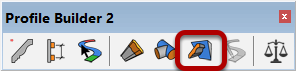
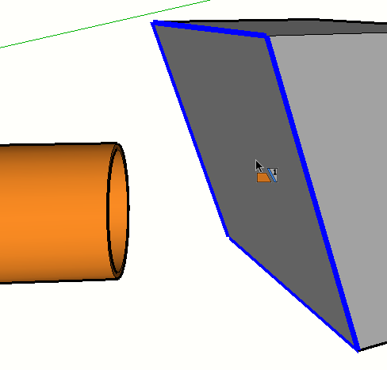
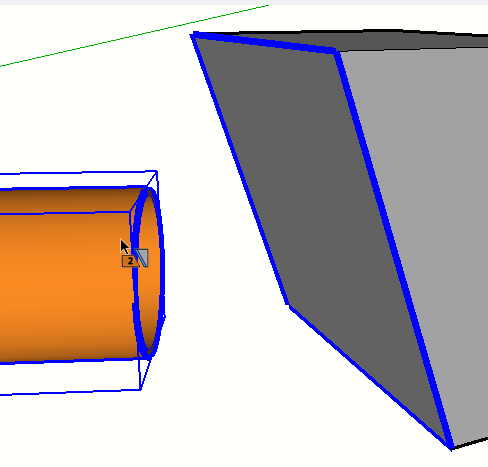
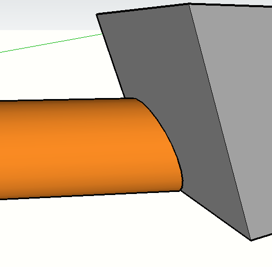

The Profile Member does not need to be a solid.
Click on the end of a Profile Member to select it.
Continue clicking additional Profile Member ends for trimming if desired.
Press ESC to reset the tool.
